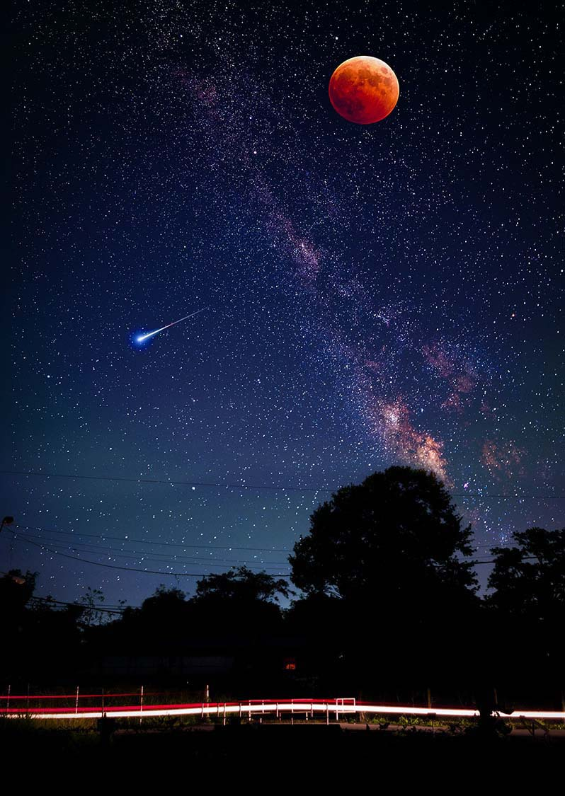

Cosmology
The Sky Above Us
For thousands of years humans have studied the night sky and found shapes in the stars. Constellations are groups of stars that form a recognizable pattern. They helped ancient humans find their way, and today they help astronomers navigate around the starry sky and locate particular galaxies, nebulas, and other space objects. They are also fun for backyard stargazers to find and enjoy. Learn more about constellations and how to locate them into the night sky with interesting activities that we provide daily.
Astronomy for Beginners
Whether you’re spotting planets with the naked eye or finding galaxies with a telescope, there are lots of ways you can take in the wonders of the universe from the comfort of Earth. It doesn’t take much skill or equipment to get started with stargazing or amateur astronomy, and you can do it almost anywhere. Whether you use an app, binoculars, telescope, or just your eyes, there is much to discover. We are going to show you how to pick the right spot and how to get oriented in the night sky. As well you will be shown how to use simple equipment to guide through the solar system and how to make this equipment by your own so that it will help you in your early stages of your exploration.
Follow with us the journey of how different civilizations went through the night sky exploration and they developed their orientation skills. See how the technics of Arab traders differ from the Northern civilizations. How Galileo created the telescope and his discovery made a breakthrough into the astronomy science and how the technology has progressed through time and what is capable of doing now.
Seasonal Observations
Meteor Showers
Usually during December and January we arrange an observation for the best meteor shower of the year. During this arrangement you can learn about meteors and how these showers are created as well as how to observe them and follow them.
Eclipses
During the summer period observations about sun-eclipses are arranged so that you can see with your eyes this fantastic phenomenon with safety and to gain knowledge about it.
